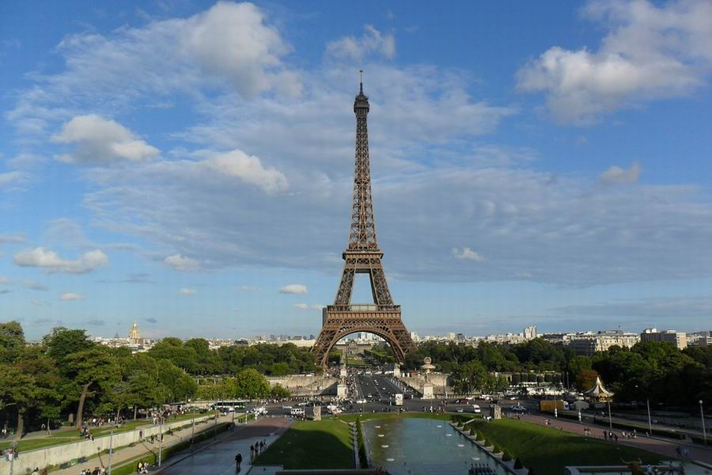
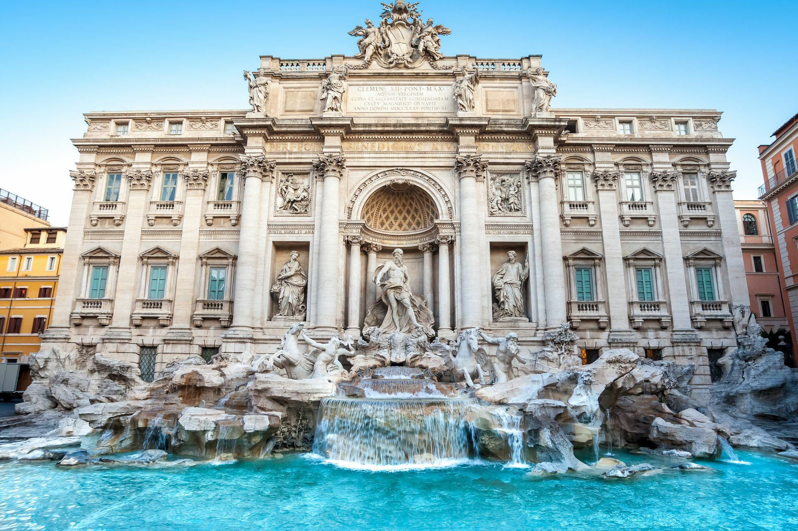

Ez a weboldal segít felfedezni Európa legszebb helyeit és hasznos utazási tanácsokat is nyújt.
 Európa egyedülálló kulturális örökséggel, lenyűgöző építészettel és ízletes ételekkel vár minden utazót. Akár múzeumokat látogatnál, akár tengerparton pihennél, itt biztosan megtalálod!
További információkért látogasd meg a Lonely Planet Europe oldalt.
| Régió | Főbb országok | Jellemző |
|---|---|---|
| Nyugat-Európa | Franciaország, Németország | Fejlett infrastruktúra, múzeumok |
| Dél-Európa | Olaszország, Spanyolország | Tengerpartok, mediterrán ételek |
| Közép-Európa | Magyarország, Ausztria | Történelem, gyógyfürdők |